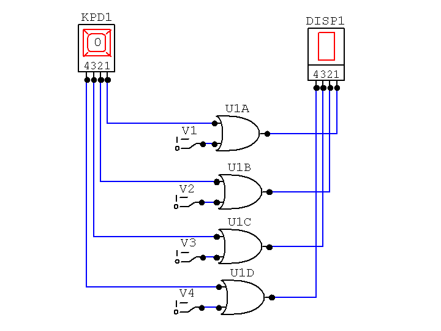

Send the answers to the following questions to me by email by midnight on the Due Date. The Subject line of your mail must say, "CSCI-343 Assignment 2" and your mail must start with your name and ID number.
Do not send me a Word document. Just send me a plain email message with your answers in it. (If you do prepare your answers using a word processor, copy your answers from the document and paste them into your email message.)
My email address, vickery@qc.edu is working again now.
Compute the GPA for a student who has the following grades:
| Grade | Credits |
|---|---|
| A+ | 6 |
| A | 33 |
| A- | 20 |
| B+ | 19 |
| B | 24 |
| B- | 12 |
| C | 6 |
1226 / (3 * 120) = 3.406
The GPA is calculated to three decimal places. Why not two or four places instead?
Three places are needed to discriminate between minimally different sets of grades, but four places adds no meaningful information compared to three.
Consider the differences among three students: one had A's for all 120 credits taken (12 * 120 = 1440 quality points), and another student had A's for 119 credits and an A- for the other credit (12 * 119 + 11 * 1 = 1439 quality points), and the third had 118 credits of A and 2 credits of A- (1438 quality points. The three GPAs are 4.00000, 3.99722, and 3.99444 respectively. Two decimal places would not distinguish between the second and third students (or between the first and second if you rounded); three decimal places does distinguish among all three, and four decimal places adds no real information about the differences among the students' performances.
A program exectutes 1,500,000 instructions when it is run. Of these instructions, 20% require 500 picoseconds to execute, 30% require 800 picoseconds to execute, and the remainder require 1.2 nanoseconds to execute.
A) What is the average execution time per instruction in nanoseconds?
Converting all times to nanoseconds, the weighted average is (0.2 * 0.500) + (0.3 * 0.800) + (0.5 * 1.2) = 0.940 nsec. You could get the same answer by converting everything to picoseconds and dividing the result by 1,000.
B) What is the average execution time per instruction in picoseconds?
940 psec
C) What is the average execution time per instruction in seconds? (Write this out as a decimal number with no exponent.)
0.000,000,000,940 sec.
D) What is the total execution time for the program?
Scale
your answer so the value part is between 1 and 999, and use the
proper unit of measure in your answer.
1,500,000 * 0.000,000,000,940 = 0.001,410 sec., which scales to 1.410 msec.
What is the period of a 750 MHz clock signal?
Scale your
answer so the value part is between 1 and 999, and use the proper
unit of measure for your answer.
1/(750E+06) = 0.001,333E-06 = 1.333E-09 = 1.333 nsec.
What is the frequency of a clock signal with a period of 250
picoseconds?
Scale your answer so the value part is between 1 and 999, and use
the proper unit of measure for your answer.
1/(250E-12) = 0.004E+12 = 4.0E+09 = 4.0 GHz
To make a CD recording, the sound level is sampled at a rate of 44 KHz with a resolution of 1 part in 4096. There are two audio channels.
A) How many bits per sample must be recorded?
log24096 = 12 bits per audio channel, for a total of 24 bits per sample for the two channels combined.
B) How many bytes must be stored to record one minute of music?
(Bits per Sample * Samples per Second * Seconds per Minute) / Bits per Byte = (24 * 44,000 * 60) / 8 = 7,920,000, or 7.553 MB per minute. (When converting from bytes to megabytes be sure to divide by 1024*1024, not by 1,000,000.)
Each pixel on a computer monitor can display any of 256 different intensities of red, 256 intensities of green, and and 256 intensities of blue. This monitor has a resolution of 1600x1200 pixels, and a refresh rate of 80 Hz.
A) How many bits have to be stored for each pixel?
24: log2256 = 8 for each of the red, green, and blue primaries.
B) How big must the display buffer be to hold one complete image for the monitor screen? Express your answer in bytes, kilobytes, and megabytes.
1600 * 1200 * 3 (24 bits is three bytes) = 5,760,000 bytes.
5,7600,000 / 1,024 = 5,625.0 KB
5,625 / 1,024 = 5.493 MB
C) How much time do the electron beams spend at each pixel position on each refresh cycle? Give your answer in nanoseconds. Ignore the time the beams spend moving from scan line to scan line and from the bottom of the screen to the top.
1600 * 1200 (pixels) * 80 refresh cycles per second = 153,600,000 pixels per second. The reciprocal is 6.510E-09, or 6.51 nsec per pixel.
A certain computer can have up to 2 GB (gigabytes) of memory. How many bits must be used for a memory address for this amount of memory? Assume this is a byte-addressable memory.
2 GB is 21 * 230 = 231 bytes. So it would take 31 yes/no questions to determine which byte to read or write. Since a memory address is a number that specifies which byte to read or write, addresses must be 31 bits.
If you have not already done so, download and install the CircuitMaker software on your PC. Click on this link to get to a web page that gives you a link for downloading the program and instructions for using it.
Assemble and simulate the circuit below using CircuitMaker. You can find all the devices in this circuit (Hex Keypad, Hex Display, Digital Switches, and 2-input OR gates) on the Hotkeys menu.
Use the Discussion Board for the course if you have any problems using CircuitMaker for this assignment.
You will receive up to three extra credit points for the course if you ask and/or answer questions on the Discussion Board. The more you use the board and the better the quality of your questions and answers, the more points you can earn.
But just giving the answers to homework questions will subtract from your extra credit points!

Attach your .ckt file to your mail message when you submit this assignment, and answers the following questions in your message body:
The number displayed increases by one. When it gets to 0xF (Hexadecimal F), it then wraps around to zero. The Hex display always shows the same value as the keypad.
The It takes on whatever value you type. The Hex display changes too.
Switch V1 is connected through an OR gate to the "1" input of the Hex display, so the Hex display always shows odd-numbered values.
The switches can be used in various combinations to cause any value to show in the hex display.
The display always shows a value between 0x8 and 0xF.
Either the hex keypad or the switches can be used to set the values of the four inputs to the hex display. The hex display shows the hexadecimal representation of the four-bit binary number connectied to its inputs.
In order for an input to the hex display to be a one, both the corresponding switch and the the corresponding output from the hex keypad would have to be 1.